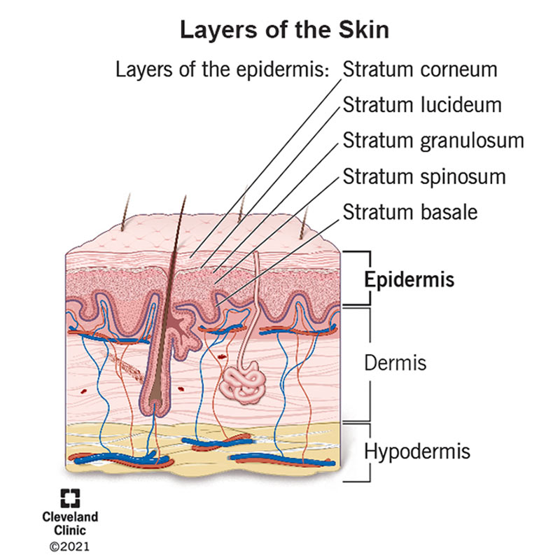

Overview
The integumentary system consists of the skin, hair, nails, sweat glands, and sebaceous (oil) glands.
It protects the body from injury, pathogens, and water loss while helping regulate temperature and detect sensations.
The skin consists of two main layers: the epidermis and dermis. Beneath the skin lies the hypodermis (subcutaneous tissue), which provides insulation, cushioning, and energy storage.
- Hair and nails: Made primarily of keratin, a tough structural protein.
- Sweat glands: Produce perspiration to help regulate body temperature.
- Sebaceous glands: Release sebum (oil) to lubricate skin and hair.

Major Structures
- Epidermis: Outermost skin layer. Forms a protective, water-resistant barrier. Contains keratinocytes and melanocytes, which produce melanin.
- Dermis: Middle layer containing blood vessels, nerves, sensory receptors, hair follicles, and sweat and oil glands. Provides strength and elasticity.
- Hypodermis (Subcutaneous Tissue): Layer beneath the skin, containing primarily fat and connective tissue. Provides insulation, cushioning, and energy storage.
- Hair: Keratin-containing structures that provide protection and contribute to sensation.
- Nails: Hard keratin structures that protect the tips of fingers and toes.
- Sweat Glands: Produce sweat, which cools the body through evaporation.
- Sebaceous Glands: Produce sebum to lubricate and protect the skin and hair.
Key Processes
- Protection: Creates a barrier against pathogens, physical damage, and excessive water loss.
- Immune Defense: Skin cells and resident immune cells help recognize pathogens and coordinate local inflammatory responses.
- Thermoregulation: Sweating and changes in skin blood flow help regulate body temperature.
- Sensation: Sensory receptors detect touch, pressure, pain, and temperature.
- Wound Healing: Damaged tissue undergoes inflammation, repair, and remodeling.
- Vitamin D Synthesis: UVB exposure initiates vitamin D production in the skin.
- Skin Renewal: New epidermal cells replace older cells shed from the surface.
Effects of Aging
- Thinner skin: Increases susceptibility to skin tears and injury.
- Reduced elasticity: Skin becomes more fragile and less resilient.
- Decreased sweat and oil production: Can contribute to dry skin and reduced temperature regulation.
- Slower wound healing: Skin repair may take longer.
- Reduced subcutaneous fat: Less cushioning over bony prominences.
Clinical Implications
- Thinner, less elastic skin is more susceptible to injury during transfers, repositioning, and adhesive removal.
- Reduced cushioning over bony prominences can increase vulnerability to pressure-related tissue damage.
- Slower wound healing may prolong recovery from skin injuries.
- Reduced sweating and changes in skin blood flow may impair temperature regulation.
- Dry or fragile skin requires gentle hygiene and careful observation.
CNA Focus: Follow the individualized skin-care and repositioning plan, minimize friction and shear, and report new wounds, redness, bruising, or skin breakdown.
See Skin Integrity & Breakdown Prevention and Pressure Injuries.
Common Diseases & Disorders
| Condition | Description | Common Causes / Risk Factors | CNA Considerations |
|---|---|---|---|
| Bruises (Contusions) | Bleeding beneath the skin, often causing discoloration | Falls, bumps, trauma, fragile skin, anticoagulant medications, bleeding disorders | Report new, unexplained, or concerning bruising, especially when abuse is suspected |
| Skin Tears | Partial or complete separation of skin layers due to friction, shear, or trauma | Fragile aging skin, friction during transfers, adhesive removal, accidental bumps | Handle skin gently; report injuries and follow the care plan |
| Rashes / Contact Dermatitis | Skin irritation or inflammation, sometimes causing redness, itching, or swelling | Irritants such as soaps or detergents; allergens such as latex, fragrances, or adhesives | Observe location, appearance, discomfort, and changes; report concerns |
| Pressure Injuries | Damage to skin and underlying tissues caused by pressure or pressure combined with shear | Immobility, sustained pressure over bony areas, impaired sensation, poor nutrition or perfusion | Follow individualized repositioning and pressure-injury prevention measures |
| Shingles (Herpes Zoster) | Reactivation of varicella-zoster virus, often causing a painful, blistering rash | Previous chickenpox infection; increased risk with aging or weakened immunity | Report promptly and follow prescribed infection-control precautions |
| Scabies | Contagious skin infestation caused by mites, often producing intense itching and rash | Prolonged skin-to-skin contact with an infested person; outbreaks in congregate living settings | Report suspected infestation and follow facility precautions |
| Head Lice (Pediculosis) | Infestation of the scalp and hair by lice | Primarily direct head-to-head contact; less commonly shared combs, hats, or hair accessories | Report suspected lice; avoid sharing personal hair-care items |
| Psoriasis | Chronic immune-mediated disease causing inflamed, often scaly skin plaques | Genetic susceptibility, immune dysregulation; possible triggers include infections, stress, and skin injuries | Observe skin changes; avoid irritating affected areas |
| Eczema (Dermatitis) | Group of inflammatory skin conditions causing dryness, itching, and irritation | Skin barrier dysfunction, genetics, environmental irritants, allergens, dry conditions | Support gentle skin care and report worsening symptoms |
Important: CNAs observe and report skin abnormalities rather than independently diagnosing skin diseases or selecting treatments.
When to Report
- New or unexplained bruising or skin injuries.
- Open wounds, blisters, or new skin breakdown.
- Spreading redness, warmth, swelling, or drainage.
- New painful or itchy rashes.
- Suspected contagious skin conditions.
- Significant changes in existing wounds or skin conditions.
Sudden widespread rash with breathing difficulty or facial/tongue swelling requires emergency response.
Study Notes
Clinical Connections
- Skin Integrity & Breakdown Prevention: Gentle hygiene, skin observation, and individualized repositioning help prevent injury.
- Wound Dressings & Bandage Care: Appropriate dressings protect wounds and support healing.
- Incontinence Care: Prolonged moisture exposure and irritants can damage the skin.
Questions
- What distinguishes the epidermis, dermis, and hypodermis?
- Why does the epidermis not contain blood vessels?
- How do sweat glands and skin blood vessels regulate temperature?
- What role does keratin play in protecting the body?
- How does aging affect skin thickness, elasticity, and wound healing?
- Why are immobile residents at greater risk for pressure injuries?
Flashcards
What are the two layers of the skin proper?01-foundations / anatomy-physiology / integumentary
Epidermis and dermis.
What is the primary function of the epidermis?01-foundations / anatomy-physiology / integumentary
Provide a protective, water-resistant barrier.
What structures are found in the dermis?01-foundations / anatomy-physiology / integumentary
Blood vessels, nerves, sensory receptors, hair follicles, and glands.
What is the function of the hypodermis?01-foundations / anatomy-physiology / integumentary
Insulation, cushioning, and energy storage.
What protein makes up most of hair and nails?01-foundations / anatomy-physiology / integumentary
Keratin.
Which cells produce melanin in the skin?01-foundations / anatomy-physiology / integumentary
Melanocytes.
How does sweating help regulate body temperature?02-mechanisms / anatomy-physiology / integumentary
Evaporation of sweat removes heat from the body.
What is the function of sebaceous glands?01-foundations / anatomy-physiology / integumentary
Produce sebum to lubricate the skin and hair.
How does the skin contribute to vitamin D production?02-mechanisms / anatomy-physiology / integumentary
UVB exposure initiates vitamin D synthesis.
How does aging affect the skin?02-mechanisms / anatomy-physiology / integumentary
Skin may become thinner, less elastic, and slower to heal.
What is a skin tear?01-foundations / anatomy-physiology / integumentary
Separation of skin layers caused by friction, shear, or trauma.
What is a contusion?01-foundations / anatomy-physiology / integumentary
A bruise caused by bleeding beneath the skin.
What causes a pressure injury?02-mechanisms / anatomy-physiology / integumentary
Sustained pressure or pressure combined with shear.
What causes shingles?02-mechanisms / anatomy-physiology / integumentary
Reactivation of the varicella-zoster virus.
What should a CNA do upon discovering unexplained bruising?03-application / anatomy-physiology / integumentary
Ensure resident safety, document observations, and report promptly; follow abuse-reporting requirements if suspected.